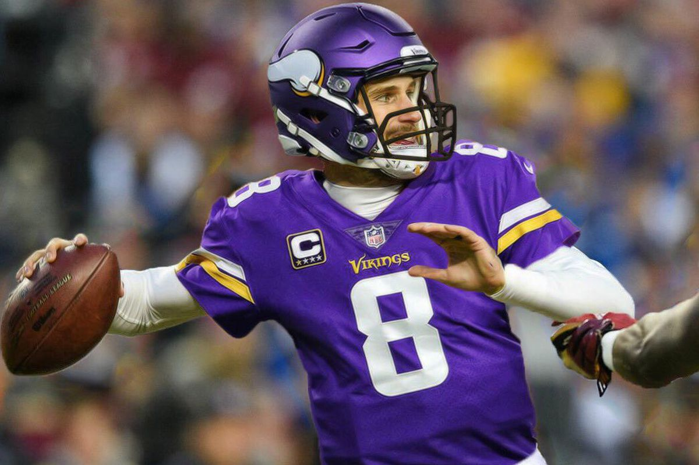

Arguably one of the biggest free agent signings the Vikings have ever had, Kirk Cousins signed a 3 year 84 million dollar all garunteed contract with the team this offseason. This is the most any quarter back in the league willbe paid by season in the NFL. The Vikings took a risk on Cousins however, as last season they were faced with a situation where they had to choose between 3 other players for the position. They instead chose to trade 2 of those players and sign Cousins.
You may be asking yourself, why are these numbers impressive? Well, Kirk Cousins is going to be in his 7th year in the NFL in 2018, the prime of a quarterback's career. When his mind is the sharpest, and his arm is the strongest. Over the past 3 years, he has thrown at least twenty one touchdowns in a season, and that number will more likely stay at or above that average over the next few years. He has a sixty five percent pass completion, which means he is already very accurate. Over the next 3 years, Cousins should hit his stride and really put up numbers for the Minnesota Vikings.